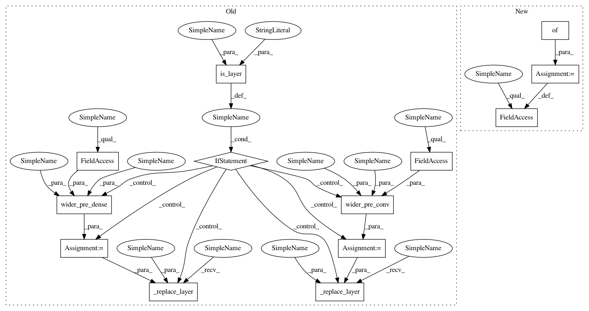

d3b18acb8ba630f30131a940e1dfeeb88eb5b8cc,autokeras/graph.py,Graph,to_wider_model,#Graph#Any#Any#,378
Before Change
pre_layer = self.layer_list[pre_layer_id]
output_id = self.layer_id_to_output_node_ids[pre_layer_id][0]
dim = layer_width(pre_layer)
if is_layer(pre_layer, "Conv"):
new_layer = wider_pre_conv(pre_layer, n_add, self.weighted)
self._replace_layer(pre_layer_id, new_layer)
else:
new_layer = wider_pre_dense(pre_layer, n_add, self.weighted)
self._replace_layer(pre_layer_id, new_layer)
self._search_next(output_id, dim, dim, n_add)
def to_dense_deeper_model(self, target_id):
Insert a dense layer after the target layer.
After Change
pre_layer = self.layer_list[pre_layer_id]
output_id = self.layer_id_to_output_node_ids[pre_layer_id][0]
dim = layer_width(pre_layer)
self.vis = {}
self._search(output_id, dim, dim, n_add)
def to_dense_deeper_model(self, target_id):
Insert a dense layer after the target layer.
In pattern: SUPERPATTERN
Frequency: 4
Non-data size: 13
Instances
Project Name: keras-team/autokeras
Commit Name: d3b18acb8ba630f30131a940e1dfeeb88eb5b8cc
Time: 2018-05-21
Author: jin@tamu.edu
File Name: autokeras/graph.py
Class Name: Graph
Method Name: to_wider_model
Project Name: jhfjhfj1/autokeras
Commit Name: d3b18acb8ba630f30131a940e1dfeeb88eb5b8cc
Time: 2018-05-21
Author: jin@tamu.edu
File Name: autokeras/graph.py
Class Name: Graph
Method Name: to_wider_model
Project Name: jhfjhfj1/autokeras
Commit Name: 1d52eb75c5fcfb3f9465eb6614b7bb2b57dece4d
Time: 2018-05-20
Author: jin@tamu.edu
File Name: autokeras/graph.py
Class Name: Graph
Method Name: to_wider_model